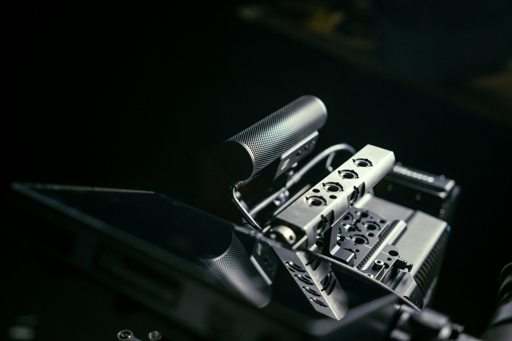

The Art of Film Editing: Crafting the Final Narrative
An exploration of the essential role of film editing in shaping stories, pacing, and audience engagement in cinema.
At its core, editing is the process of selecting, arranging, and piecing together shots to create a finished film. This creative practice involves not just cutting scenes together but also making decisions about pacing, rhythm, and emotional impact. Editors are storytellers in their own right, shaping the narrative flow and guiding audience reactions through their choices. The editing room is where the film truly takes shape, as editors collaborate with directors to realize their vision.
One of the primary responsibilities of an editor is to establish the pacing of a film. Pacing determines how quickly or slowly the story unfolds, influencing the emotional journey of the audience. For example, in action films, rapid cuts and quick transitions can create a sense of urgency and excitement, drawing viewers into the high-stakes situations on screen. Conversely, slower pacing may be employed in dramatic films to allow for deeper character development and emotional resonance. The way scenes are edited together can evoke tension, joy, or sadness, making it an essential aspect of storytelling.
Transitions between scenes also play a crucial role in editing. Techniques such as cuts, fades, and dissolves can enhance the narrative flow. A simple cut can create a jarring effect, emphasizing a moment of shock or surprise, while a fade might signal the passage of time or a shift in emotion. Each transition has the potential to influence how the audience perceives the story, highlighting the editor's role as a key creative force.
The importance of rhythm in film editing cannot be overstated. Rhythm is not merely about timing; it involves the interplay of visuals, sound, and music to create a harmonious experience. Editors work closely with sound designers and composers to synchronize visuals with audio, enhancing the overall impact of a scene. For instance, in musical films, the editing must align perfectly with the rhythm of the music to create a seamless and engaging experience. The ability to weave together sound and imagery is a hallmark of skilled editing, allowing for a more immersive experience.
Moreover, the editor's choices influence character development and audience engagement. By selecting which moments to highlight and which to downplay, editors shape the audience's perception of characters and their journeys. In romantic films, for example, editors may choose to linger on moments of intimacy, enhancing the emotional stakes of the relationship. Alternatively, in thrillers, quick cuts may be used to heighten suspense and keep viewers on the edge of their seats. The power of editing lies in its ability to evoke specific emotions and guide the audience's focus.
Film editing has evolved significantly with advancements in technology. The transition from traditional linear editing to non-linear editing systems has revolutionized the process. Editors now have greater flexibility to manipulate footage, making it easier to experiment with different cuts and sequences. Digital editing software allows for precision and creativity that was previously unattainable, enabling editors to push the boundaries of storytelling. This evolution has opened new avenues for creativity, allowing for innovative techniques such as montage sequences that can condense time or convey complex ideas visually.
Montage, in particular, is a powerful editing technique that juxtaposes a series of images or clips to convey a specific message or emotion. It can be used to show the passage of time, highlight contrasts, or emphasize themes. Iconic montages, like the training sequences in "Rocky" or the emotional recollections in "Up," demonstrate how editing can create profound connections between images and narratives. Through montage, editors can compress information, guiding the audience's understanding of the story in a visually compelling way.
The collaborative nature of film editing is another essential aspect of the process. Editors work closely with directors, cinematographers, and sound designers to ensure that the final product aligns with the overall vision of the film. This collaboration often involves multiple rounds of revisions, as directors provide feedback and make adjustments to achieve the desired effect. The editing room becomes a creative space where ideas are exchanged and refined, ultimately leading to a polished final product that reflects the collective efforts of the entire team.
Furthermore, the relationship between the editor and the director is crucial to the success of a film. Directors rely on editors to understand their vision and enhance it through editing choices. Iconic directors such as Martin Scorsese and Quentin Tarantino are known for their close collaborations with their editors, resulting in films that showcase a distinctive style and narrative flow. The trust and communication between directors and editors are vital, as they work together to craft the pacing, rhythm, and emotional depth of the film.
As audiences become more sophisticated in their viewing habits, the role of editing continues to evolve. Viewers are increasingly aware of the techniques employed in storytelling, leading to a demand for innovative and engaging narratives. Editors must adapt to these changing expectations, exploring new methods to captivate audiences and maintain their attention. In an age of digital media, where content is consumed in various formats, editors are tasked with creating experiences that resonate across platforms, from theaters to streaming services.
In conclusion, film editing is a vital art form that shapes the narrative, pacing, and emotional impact of cinema. Editors are the unsung heroes behind the scenes, transforming raw footage into a cohesive and engaging story. Through their choices, they influence how audiences perceive characters, experience emotions, and connect with narratives. As technology continues to advance, the craft of editing will undoubtedly evolve, offering new opportunities for creativity and innovation in storytelling. Ultimately, the editor's work is essential in crafting the final narrative that audiences experience on screen, making film editing an indispensable part of the filmmaking process.